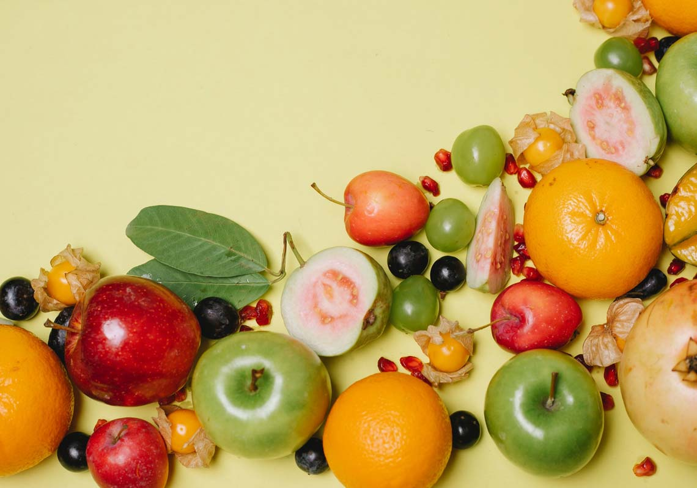
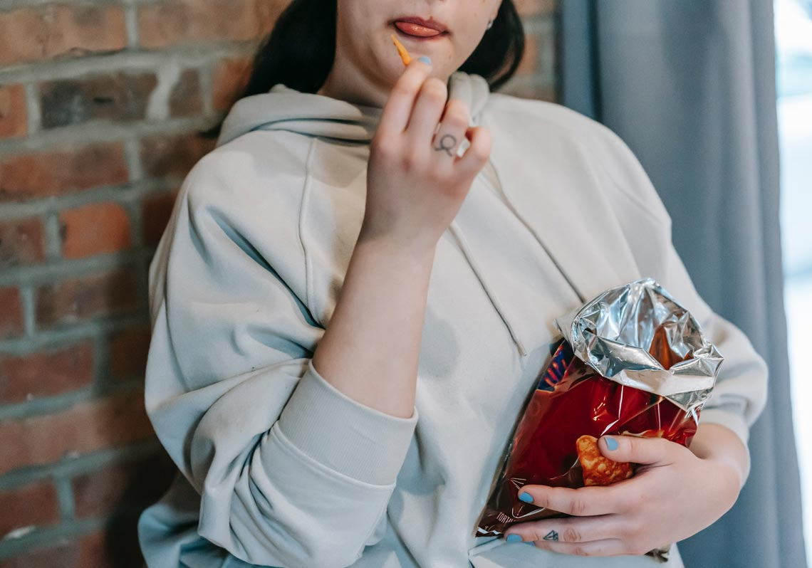
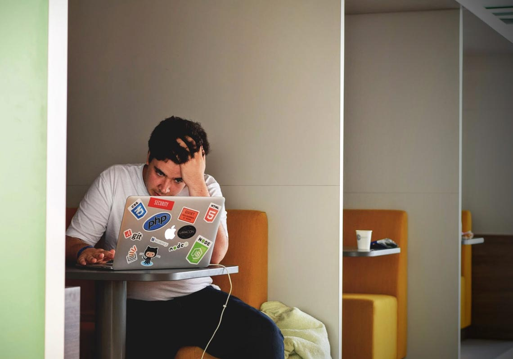

近年來大家都瘋減重，有人會嘗試一些「168斷食」、「生酮飲食」等等的減重方法，但是肥胖造成的原因有非常多種，像是基因、遺產、飲食、運動或是疾病等影響非常多種，那今天就要帶大家了解讓你減重瘦不下來的5個原因。
這裡推薦大家可以選擇「蛋白質減重法」，比168斷食更容易，又能衝破瘦身停滯期，不會餓肚子一個，輕鬆瘦下7公斤。 「蛋白質減重法」不僅能控制脂肪和熱量的攝取量，還可以提升你的肌肉量，還有基礎代謝率，一起看看怎麼執行吧。
原因1:「食物吃錯了」是什麼意思？

我們平常每天都會吃東西，那主要攝取進來的會產生熱量的三種營養素，第一個是碳水化合物，像是我們平常聽到的糖類或是澱粉。再來就是蛋白質，最後是油脂，這幾種是組成我們身體很重要能量的營養素，它是會「產熱量」的營養素。
那其他我們比較容易忽略的，維他命C、維他命A、D、E、K，礦物質比如說鈣質、鎂、鐵質，這些都跟我們身體的代謝很有關係，那常常大家吃了很多的加工食物，加工程度越高，我們這些對身體有幫助的維生素、礦物質流失就會越多，所以當我們吃了越多精製加工的食物，吃不了這些營養素豐富的食物，這時候身體代謝就會受到影響。那到底怎麼吃呢？
最重要的是優先選擇天然、新鮮、加工度低的食物，然後我們要均衡的飲食，把6大類的食物都吃足夠：水果、蔬菜、全穀雜糧、豆魚蛋肉類、乳品類，最後一個是油脂與堅果種子類。
Q:水果褫吃多容易胖？
A:沒有，就是量的問題，我們只要把量控制好就可以了。像一天會建議吃兩個拳頭大小的水果；蔬菜的話我們可以多吃沒有關係，因為蔬菜富含纖維讓我們肚子很容易有飽足感，那它的熱量又非常的低，所以蔬菜可以多吃一點。
像是全穀雜糧比如說平常吃的飯或是南瓜地瓜，這些天然原型的食物都很合適，但是吃多也是很容易導致血糖上升，脂肪囤積的問題；再來蛋白質也要吃得夠，蛋白質選擇想黃豆類的豆漿、豆腐或是魚、雞蛋一些瘦的肉類；其次是乳品類，它是豐富的鈣質來源，每天可喝240cc的1-2杯左右，最後是油脂，選擇天然植物油，橄欖油、亞麻仁籽油、羅理油、苦茶油可抗發炎，這就是我們均衡的飲食。
原因2:吃太多或吃太少是什麼意思？

我們一整天會消耗的熱量包括了基礎代謝率佔熱量消耗約7成；還有一個是食物熱效應，進食後身體消耗熱量來產熱；接下來就是非運動性熱量消耗，日常活動走路、刷牙洗臉等等；最後是運動消耗，例如跑步、游泳、瑜珈等各種運動。當進食的熱量超過了熱量消耗的量就會肥胖瘦不下來。
Q：吃太少為什麼也瘦不下來？
A：吃低於基礎代謝的時候，身體會去調整這個熱量的消耗，把基礎代謝率越壓越低。所以之後再多吃一點點的時候，就會容易復胖，就可能變成溜溜球效應。
原因3:活動量和運動量不夠是什麼意思？
活動消耗實質日常活動，例如刷牙洗臉、走路，常坐辦公室的日常活動量低也會瘦不下來，這裡推薦大家幾個增加活動量的方法：
1.辦公族建議一段時間站起來走一走
2.等公車的時候不要站在原地，可以小範圍散步
3.吹頭髮、刷牙也可以原地踏步
運動除了消耗熱量以外，它對於啟動我們身體的代謝，還有一些粒線體等等能量的消耗以及增加我們的肌肉都非常有關係，所以找一個自己喜歡可以持續坐下去的運動才對瘦有幫助。
原因4:生活型態的改變是什麼意思？
生活型態比如說平常有人有情緒、壓力、工作、作息或是睡眠這些都會影響到我們身體的代謝，當我們這些日常生活受到影響，身體可能處於一個壓力的狀態，壓力荷爾蒙增加，會導致我們一些荷爾蒙的異常失調，導致我們的代謝異常，可以試試看一些紓壓的方法：如果壓力源暫時無法改變，先從紓壓、正念冥想、瑜珈來調適身心靈。
原因5:周遭環境的影響是什麼意思？

如果當你看到很多食物的時候，我們的整個感官會被觸發，建議家裏少放零食餅乾，可放豆漿、牛奶取代零食，飲料的話因為裡面的糖分像高果糖糖漿很容易造成我們的肥胖、脂肪肝或是血糖增加等等的問題，我們可以從全糖要加料逐漸改成半糖、微糖減料到最後無糖，喜歡加料、咀嚼口感的人可以選擇無糖的寒天、仙草、愛玉增加飽足感，而芋圓、粉圓有熱量的澱粉食物要減少，所以希望大家可以有一意願的去選擇這些糖分比較少、油脂比較少，比較天然的食物當作你的點心！
健康瘦身不外乎是我們注意的飲食、食物的挑選加上運動，還有我們整體的生活習慣，充分了解自己後，才能知道要怎麼去選擇食物熱量要怎麼搭配，然後持之以恆長久的執行慢慢的減重，這樣對身體的健康才是更好的。